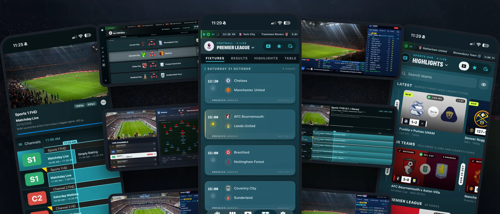
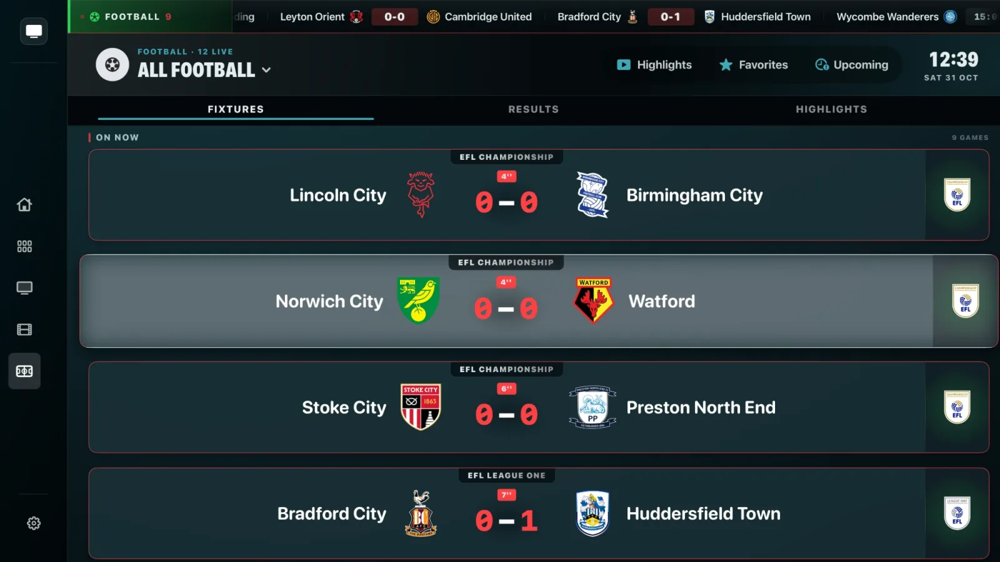
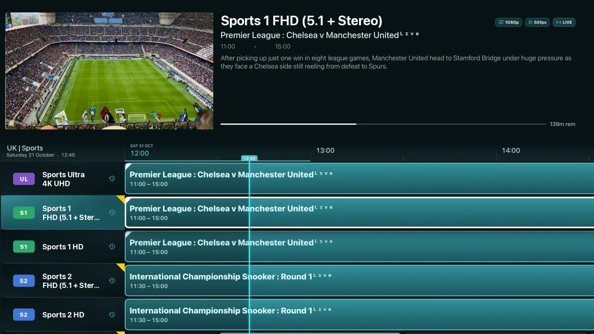
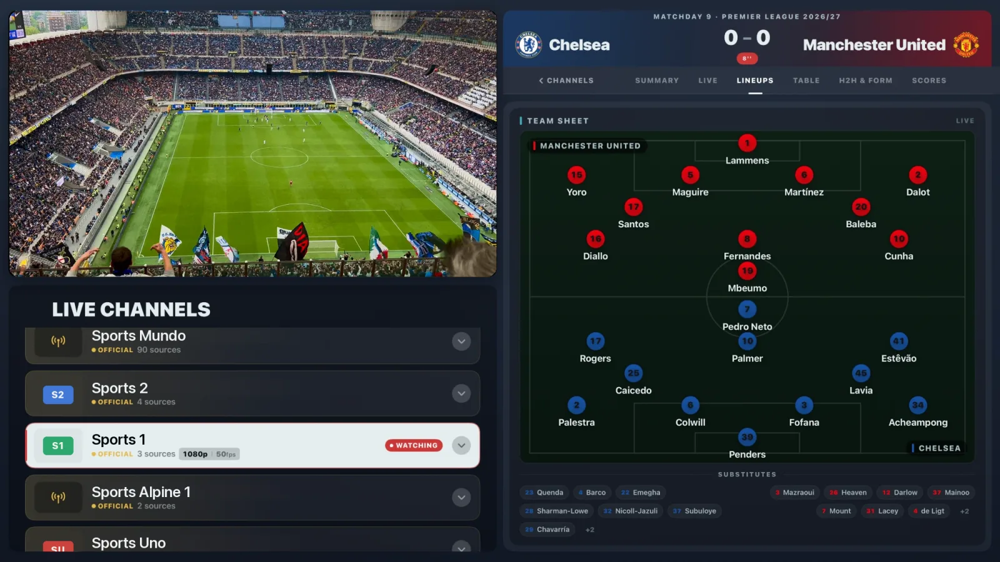
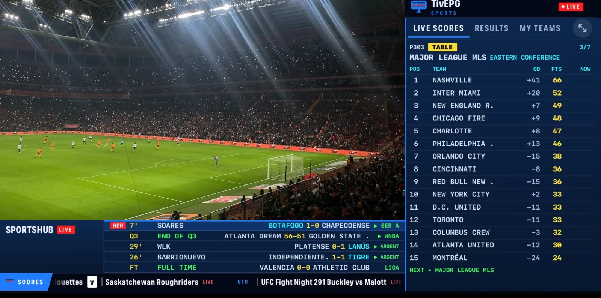
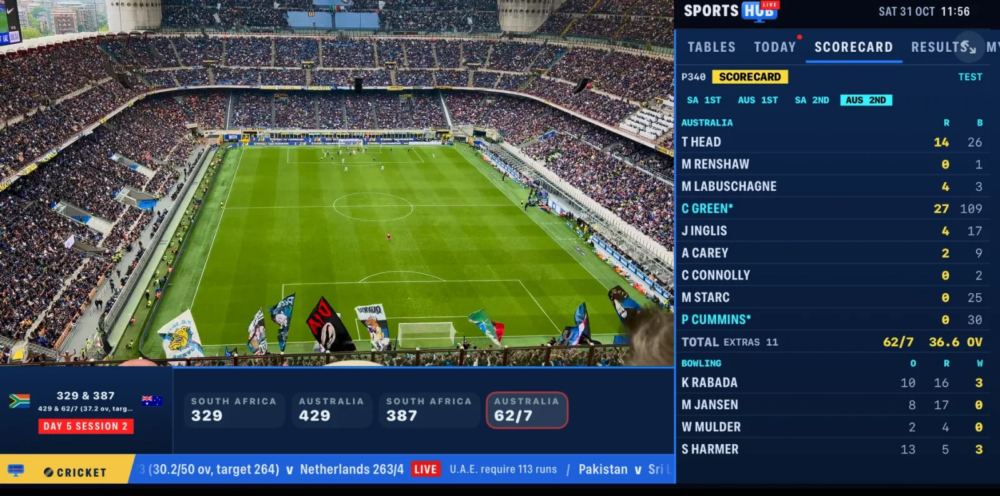
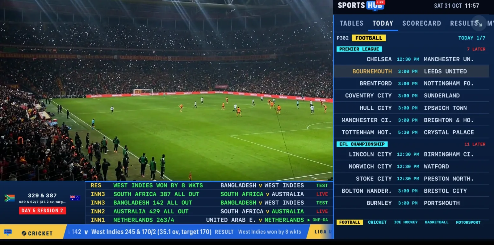

IPTV Player & Sports Hub
Your TV. Every sport.
One app.
A proper TV guide, every fixture and score, and the channel showing it. On iPhone, iPad and Apple TV.

iPhone
Every fixture. Every score. Live.
Football, cricket, basketball, F1 and more, with the channel showing it one tap away.
- Tap a game. We find the channel.Your whole playlist searched, official broadcasters first.
- Your TV guide, done properly.Watch while you browse, catch up and set reminders.
- Missed the game? Watch it back.Spoiler-free highlights for every sport you follow.
- Team news, the moment it lands.Line-ups, stats and head-to-head for every game.
iPad
Watch the game. Follow every stat.
Live stats, tables and line-ups beside the picture. Or four games on one screen.
Apple TV
Made for the big screen.
A guide that feels like TV, a Sports Hub built for the remote, and the match centre right beside the game.






FAQ
Good to know.
Which sports does TivEPG cover?
Football, cricket, tennis, golf, Formula 1, NFL, NBA, NHL, MLB, rugby, AFL, darts, snooker, cycling, MotoGP, UFC and boxing. Every one gets fixtures, results and the channels showing it in your playlist.
Which sports have live data I can use while I watch?
- FootballLive stats, line-ups and formations, match timeline, live league tables, form and head-to-head, knockout brackets, highlights
- CricketLive scorecards, batting and bowling figures, session-by-session state, Tests, ODIs, T20s and franchise leagues
- NFL, NBA, NHL, MLBBox scores, team and player stats, live standings, playoff brackets and series state
- Formula 1Live running order and gaps, session results for practice, qualifying and the race
- TennisLive scores and the full tournament draw for ATP and WTA events
- GolfLive tournament leaderboards across the PGA Tour, DP World Tour and LIV
- BasketballNBA, WNBA, EuroLeague and more, with live box scores
It all sits beside the picture in SportsHub Live and the Match Centre, so you never leave the game to check a score.
What can I do while a game is on?
Open live stats, tables and line-ups beside the picture, follow every other score on the ticker, jump back to key moments with Replay, or put up to four games on screen with Multiview.
Does TivEPG include channels?
No. TivEPG is a player. Add your own Xtream Codes login or M3U playlist and it builds your guide, channels, movies and series from that.
Which devices does it run on?
iPhone, iPad and Apple TV, with a native app on each.
How does channel matching work?
Pick a fixture in the Sports Hub and TivEPG searches your whole playlist and guide for the channels showing it, putting the official broadcasters first.
Is it a TiviMate alternative for Apple TV?
Yes. TiviMate is Android only. TivEPG gives iPhone, iPad and Apple TV a full EPG guide, catch-up, Multiview and a built-in Sports Hub.
Where do I get help?
Join the Discord community or visit Support.
Kick-off is waiting.
TivEPG is a player only. No channels, streams or subscriptions are included.